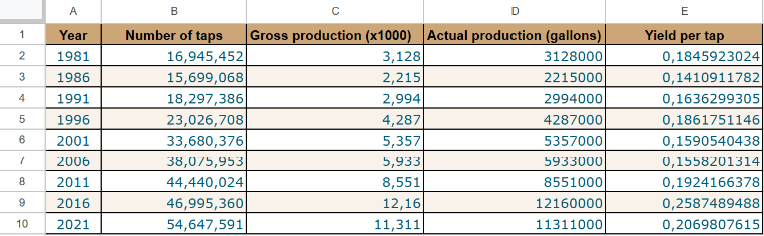

Overview
Introduction
In this case study, I act as a junior data analyst within a business intelligence consulting firm. Management has entrusted me with leading a comprehensive analysis project for a new client.
For this independent project, I must analyze the Canadian maple syrup industry. The objective is to study the relationship between infrastructure deployment (number of taps) and syrup production volume in order to provide strategic insights on yield predictability.
To structure my approach and ensure the rigor of results, this analysis strictly follows Google's six-step data analysis process: Ask, Prepare, Process, Analyze, Share, and Act.
Phase 1
Ask — Business Questions
This analysis conducts an initial macroeconomic analysis of the Canadian maple syrup industry by evaluating the historical correlation between the number of taps and total syrup production volume. The goal is to determine whether industry growth relies primarily on a linear increase in exploited resources (more trees), or whether yield is heavily disrupted by external factors (climatic or technological).
As an exploratory draft, this project aims to validate the relevance of this simple model before later integrating complex variables such as detailed weather data and vacuum pump technology.
Stakeholders & Target Audience
- Objective: Allow the client to determine whether investing in new maple groves guarantees a predictable increase in production, or whether climate risk entirely dictates the business model.
- Target client: A group of investors seeking to understand the real growth levers of the maple syrup industry.
- Presentation audience: The client's executive team.
Business Questions
Is there a linear and proportional relationship between the number of taps and maple syrup production in Canada?
How stable is this relationship over the years — is yield per tap stagnating or progressing?
Do major year-to-year production variations stem from tap volume or external factors (climate, technology)?
Phase 2
Prepare — Data Sources
The analysis draws on two official public datasets covering a 40-year historical period (1981–2021):
Infrastructure Data
Production Data
Credibility Assessment — ROCCC Framework
Data Structure
- Format: .csv files extracted from open data portals.
- Variables: Year · Number of taps · Total production (gallons).
- Privacy: Fully aggregated at the national level — no PII included. Original source files archived in read-only mode before any manipulation.
Identified Data Limitations
- Univariate analysis: This draft focuses mainly on the human/infrastructural factor (taps).
- Hidden factors: Seasonal microclimatic variations (e.g., freeze/thaw days in March–April) and vacuum tubing adoption rates are not quantified in these files. The analysis shows overall correlation but cannot mathematically isolate the precise impact of any specific spring season.
Raw Statistics Canada data was ingested into separate tabs within Google Sheets to centralize the source material before processing.
Phase 3
Process — Cleaning & Normalization
Although Statistics Canada data is structurally sound, a rigorous normalization phase was necessary to make the two files interoperable:
Identified and corrected syntax errors. Periods in production volumes blocked calculations, and commas in tap counts (e.g., 16,945,452) caused Google Sheets to read cells as text. These extraneous characters were removed to convert all columns into usable numeric formats.
Raw production data from Table 32-10-0354-01 was presented in thousands of gallons. Each value was multiplied by 1,000 (e.g., 3,128 → 3,128,000 gallons). Without this step, yield would have produced an unreadable rate of 0.00018 gal./tap instead of the correct 0.1846 gal./tap for 1981.
Eliminated intermediate annual production data to retain only the years corresponding to the Census of Agriculture: 1981, 1986, 1991, 1996, 2001, 2006, 2011, 2016, 2021. This enabled a perfect join and alignment of both sources on the same timeline.

Fig. 1 — Cleaned dataset after type casting, unit normalization, and temporal filtering (Google Sheets)
Phase 4
Analyze — Key Findings
Once the dataset was clean and standardized in Google Sheets, the analysis extracted answers to the three core business questions:
Created a new column dividing actual production by the number of taps. This metric did not exist in the raw Statistics Canada data. It revealed that average yield per tap hovers around 0.18 gallons, but changes radically year to year.
Calculated percentage changes between census years. This revealed that infrastructure grows steadily while production fluctuates dramatically — infrastructure and output do not move in lockstep.
Two historical extremes were identified: the historic low of 1986 (yield of 0.14 gal./tap) and the record high of 2016 (yield of 0.26 gal./tap) — a spread of over 40% between worst and best year.
Phase 6
Act — Conclusions & Recommendations
Key Findings
The 0.97 correlation clearly shows that adding more taps increases production over the long term. If an investor wants to grow volumes over 10 or 20 years, purchasing maple groves remains a solid long-term strategy.
Individual tree productivity changes significantly year to year — over 40% gap between best and worst years. Annual revenues cannot be reliably forecasted; a bad spring can seriously impact cash flow.
Recommendations
Set aside capital or store syrup barrels during high-yield "miracle" years (like 2016) to cover operating expenses during low-yield years (like 1986).
The r ≈ 0.97 correlation makes expanding tap infrastructure a sound long-horizon strategy — as long as short-term volatility risk is managed with reserves.
Ideas for Future Analysis
- Weather Analysis: Cross production data with freeze/thaw days in March–April to measure the direct temperature impact on sap flow and model short-term yield risk more precisely.
- Technology Analysis: Examine whether producers using vacuum tubing systems or modern concentrators manage to maintain stable yields even when weather conditions are unfavorable.